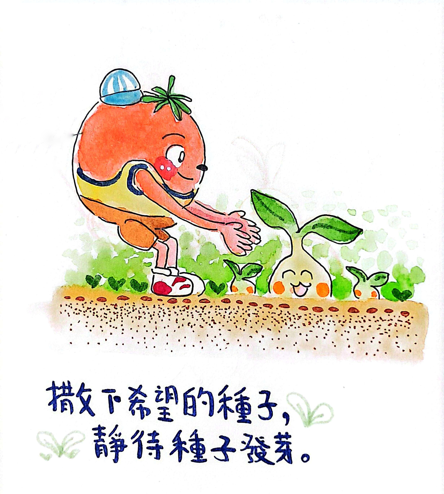
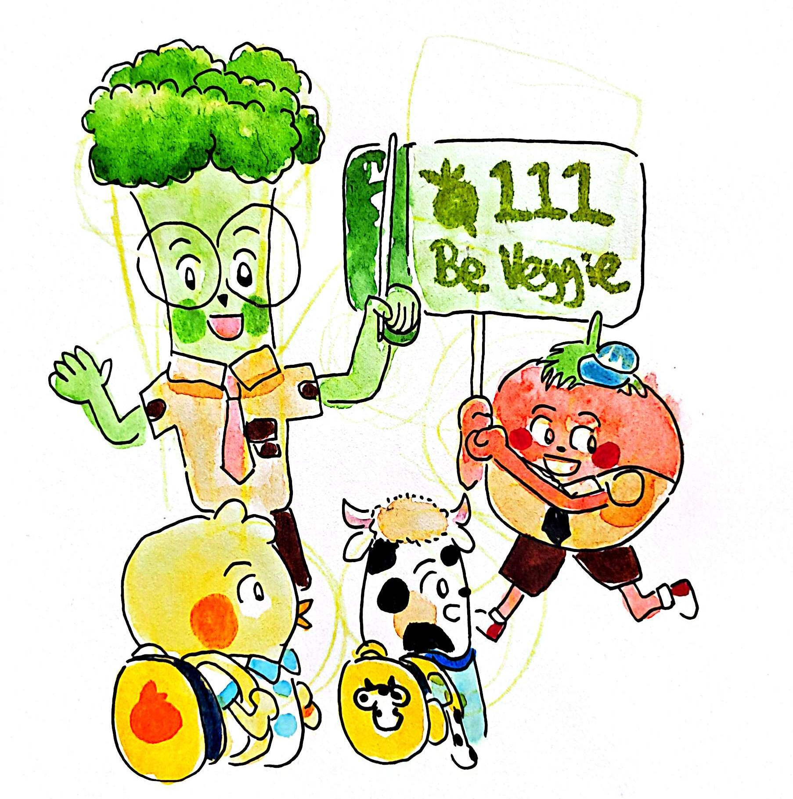

菜菜樂園 / 原創 IP 專案
番茄淘米 (Tommy) 與蔬菜夥伴的奇幻冒險



作品理念與背景
這裡可以詳細描述你的創作初衷。例如：「菜菜樂園」是由番茄化身而成的原創角色 Tommy（淘米） 所展開的世界觀。名稱取自 Tomato 與 To Me，象徵著尋找自我與自我療癒的過程...
設計細節與特色
在這裡分享你的排版過程、繪圖軟體（如 Krita、Affinity Designer）的使用心得，或是角色設定的草圖與色彩搭配邏輯。